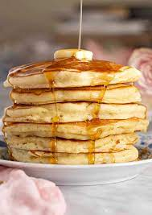

Pancakes

Description
Who doesn't love a lovely stack of flap jack? I know I do that is why I'm sharing my
favorite method of making them, here, with yu folks!
This is a quick and I mean quick 7 ingredient recipe that your sure to lover.
So buckle up, grab your preferred chef's hat and lets take a look below to see what we
need.
Ingredients:
- 1 cup all-purpose flower
- 2 tablespoons sugar
- 2 teaspoons baking powder
- 1 teaspoon salt
- 1 egg, beaten
- 1 cup milk
- Something to coat your pan with
Get Cookin'
- Mix ingredients in bowl until smooth
- Heat your skillet and coat with whatever you selected
- Pour or scoop batter into pan, using about 1/4 cup at a time
- Heat untill brown on each side
- SERVE HOT
Back